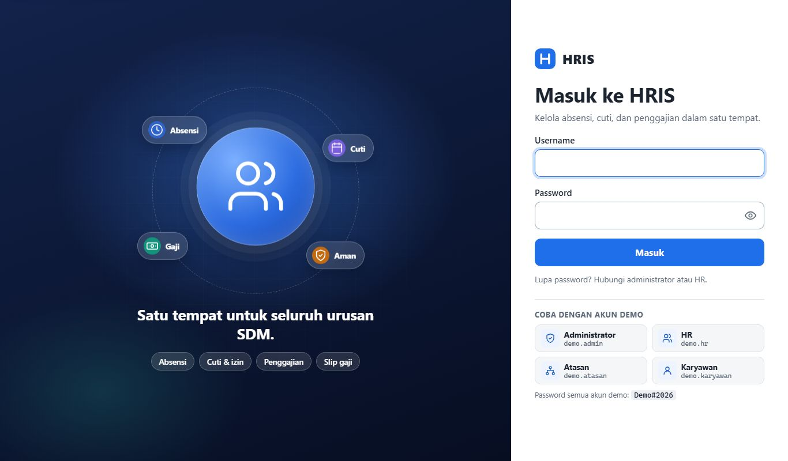

Web App // HR System
HRIS Nusantara
Indonesian-language HRIS: employee records, camera-verified Tap In/Out attendance, leave & permits, overtime, multi-level approvals, payroll with BPJS and PPh 21 (TER), and PDF payslips.
View on GitHub